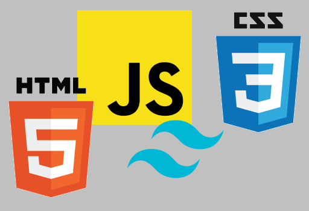

Everything happens so much
I don't really know what I'm doing, so I figured the best way to avoid imposter syndrome is to practice until I know that I am exactly where I deserve to be.

I had no idea what to put here, so please enjoy this image of
hide the pain harold me staying silent through the whole zoom
meeting, but saying "thanks everyone" at the end to make it seem like I
contributed...
Now lets talk about how I don't know what I'm doing...
My code is an inefficient mess, but I guess this is why I work in testing and not development. Let's not talk about that, here's a wonky screenshot.

So, what do I know?

I've been learning and experimenting with frontend frameworks like the ones on this site. I'm excited to keep using them to learn more about what I'm doing.
Like I said before, I'm too wonky to work on the front end, and
that's okay, because companies won't let me anywhere near it, unless
I'm trying to break it...